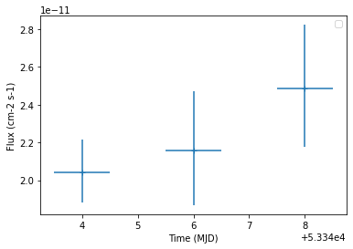

This is a fixed-text formatted version of a Jupyter notebook
Try online

You may download all the notebooks in the documentation as a tar file.
Source files: light_curve.ipynb | light_curve.py
Light curves¶
Prerequisites¶
Knowledge of the high level interface to perform data reduction, see first gammapy analysis with the high level interface tutorial
Context¶
This tutorial presents how light curve extraction is performed in gammapy, i.e. how to measure the flux of a source in different time bins.
Cherenkov telescopes usually work with observing runs and distribute data according to this basic time interval. A typical use case is to look for variability of a source on various time binnings: observation run-wise binning, nightly, weekly etc.
Objective: The Crab nebula is not known to be variable at TeV energies, so we expect constant brightness within statistical and systematic errors. Compute per-observation and nightly fluxes of the four Crab nebula observations from the H.E.S.S. first public test data releaseoto check it.
Proposed approach¶
We will demonstrate how to compute a gammapy.estimators.LightCurve from 3D reduced datasets (gammapy.datasets.MapDataset) as well as 1D ON-OFF spectral datasets (gammapy.datasets.SpectrumDatasetOnOff).
The data reduction will be performed with the high level interface for the data reduction. Then we will use the gammapy.estimators.LightCurveEstimator class, which is able to extract a light curve independently of the dataset type.
Setup¶
As usual, we’ll start with some general imports…
[1]:
%matplotlib inline
import matplotlib.pyplot as plt
import astropy.units as u
from astropy.coordinates import SkyCoord
import logging
from astropy.time import Time
log = logging.getLogger(__name__)
Now let’s import gammapy specific classes and functions
[2]:
from gammapy.modeling.models import PowerLawSpectralModel
from gammapy.modeling.models import PointSpatialModel
from gammapy.modeling.models import SkyModel, Models
from gammapy.estimators import LightCurveEstimator
from gammapy.analysis import Analysis, AnalysisConfig
Analysis configuration¶
For the 1D and 3D extraction, we will use the same CrabNebula configuration than in the notebook analysis_1.ipynb using the high level interface of Gammapy.
From the high level interface, the data reduction for those observations is performed as followed
Building the 3D analysis configuration¶
[3]:
conf_3d = AnalysisConfig()
Definition of the data selection¶
Here we use the Crab runs from the HESS DL3 data release 1
[4]:
conf_3d.observations.obs_ids = [23523, 23526, 23559, 23592]
Definition of the dataset geometry¶
[5]:
# We want a 3D analysis
conf_3d.datasets.type = "3d"
# We want to extract the data by observation and therefore to not stack them
conf_3d.datasets.stack = False
# Here is the WCS geometry of the Maps
conf_3d.datasets.geom.wcs.skydir = dict(
frame="icrs", lon=83.63308 * u.deg, lat=22.01450 * u.deg
)
conf_3d.datasets.geom.wcs.binsize = 0.02 * u.deg
conf_3d.datasets.geom.wcs.fov = dict(width=1 * u.deg, height=1 * u.deg)
# We define a value for the IRF Maps binsize
conf_3d.datasets.geom.wcs.binsize_irf = 0.2 * u.deg
# Define energy binning for the Maps
conf_3d.datasets.geom.axes.energy = dict(
min=0.7 * u.TeV, max=10 * u.TeV, nbins=5
)
conf_3d.datasets.geom.axes.energy_true = dict(
min=0.3 * u.TeV, max=20 * u.TeV, nbins=20
)
Run the 3D data reduction¶
[6]:
analysis_3d = Analysis(conf_3d)
analysis_3d.get_observations()
analysis_3d.get_datasets()
Setting logging config: {'level': 'INFO', 'filename': None, 'filemode': None, 'format': None, 'datefmt': None}
Fetching observations.
Number of selected observations: 4
Creating geometry.
Creating datasets.
No background maker set for 3d analysis. Check configuration.
Processing observation 23523
Processing observation 23526
Processing observation 23559
Processing observation 23592
Define the model to be used¶
Here we don’t try to fit the model parameters to the whole dataset, but we use predefined values instead.
[7]:
target_position = SkyCoord(ra=83.63308, dec=22.01450, unit="deg")
spatial_model = PointSpatialModel(
lon_0=target_position.ra, lat_0=target_position.dec, frame="icrs"
)
spectral_model = PowerLawSpectralModel(
index=2.702,
amplitude=4.712e-11 * u.Unit("1 / (cm2 s TeV)"),
reference=1 * u.TeV,
)
sky_model = SkyModel(
spatial_model=spatial_model, spectral_model=spectral_model, name="crab"
)
# Now we freeze these parameters that we don't want the light curve estimator to change
sky_model.parameters["index"].frozen = True
sky_model.parameters["lon_0"].frozen = True
sky_model.parameters["lat_0"].frozen = True
We assign them the model to be fitted to each dataset
[8]:
models = Models([sky_model])
analysis_3d.set_models(models)
Reading model.
Models
Component 0: SkyModel
Name : crab
Datasets names : None
Spectral model type : PowerLawSpectralModel
Spatial model type : PointSpatialModel
Temporal model type :
Parameters:
index (frozen) : 2.702
amplitude : 4.71e-11 1 / (cm2 s TeV)
reference (frozen) : 1.000 TeV
lon_0 (frozen) : 83.633 deg
lat_0 (frozen) : 22.015 deg
Component 1: FoVBackgroundModel
Name : x9zZVjfO-bkg
Datasets names : ['x9zZVjfO']
Spectral model type : PowerLawNormSpectralModel
Parameters:
norm : 1.000
tilt (frozen) : 0.000
reference (frozen) : 1.000 TeV
Component 2: FoVBackgroundModel
Name : a2NFpiMG-bkg
Datasets names : ['a2NFpiMG']
Spectral model type : PowerLawNormSpectralModel
Parameters:
norm : 1.000
tilt (frozen) : 0.000
reference (frozen) : 1.000 TeV
Component 3: FoVBackgroundModel
Name : RmGO7V_l-bkg
Datasets names : ['RmGO7V_l']
Spectral model type : PowerLawNormSpectralModel
Parameters:
norm : 1.000
tilt (frozen) : 0.000
reference (frozen) : 1.000 TeV
Component 4: FoVBackgroundModel
Name : dm2eFne8-bkg
Datasets names : ['dm2eFne8']
Spectral model type : PowerLawNormSpectralModel
Parameters:
norm : 1.000
tilt (frozen) : 0.000
reference (frozen) : 1.000 TeV
Light Curve estimation: by observation¶
We can now create the light curve estimator.
We pass it the list of datasets and the name of the model component for which we want to build the light curve. We can optionally ask for parameters reoptimization during fit, that is most of the time to fit background normalization in each time bin.
If we don’t set any time interval, the gammapy.estimators.LightCurveEstimator is determines the flux of each dataset and places it at the corresponding time in the light curve. Here one dataset equals to one observing run.
[9]:
lc_maker_3d = LightCurveEstimator(
energy_edges=[1, 10] * u.TeV, source="crab", reoptimize=False
)
lc_3d = lc_maker_3d.run(analysis_3d.datasets)
The LightCurve object contains a table which we can explore.
[10]:
lc_3d.table["time_min", "time_max", "e_min", "e_max", "flux", "flux_err"]
[10]:
| time_min | time_max | e_min [1] | e_max [1] | flux [1] | flux_err [1] |
|---|---|---|---|---|---|
| TeV | TeV | 1 / (cm2 s) | 1 / (cm2 s) | ||
| float64 | float64 | float64 | float64 | float64 | float64 |
| 53343.92234009259 | 53343.94186555555 | 1.191457161449437 | 10.000000000000002 | 2.0046109623517454e-11 | 2.0858397134787527e-12 |
| 53343.95421509259 | 53343.97369425926 | 1.191457161449437 | 10.000000000000002 | 2.034553273622826e-11 | 2.1130287926093465e-12 |
| 53345.96198129629 | 53345.98149518518 | 1.191457161449437 | 10.000000000000002 | 2.149316761566881e-11 | 2.748671677071981e-12 |
| 53347.91319657407 | 53347.932710462956 | 1.191457161449437 | 10.000000000000002 | 2.475808922107025e-11 | 2.8762854769956696e-12 |
Running the light curve extraction in 1D¶
Building the 1D analysis configuration¶
[11]:
conf_1d = AnalysisConfig()
Definition of the data selection¶
Here we use the Crab runs from the HESS DL3 data release 1
[12]:
conf_1d.observations.obs_ids = [23523, 23526, 23559, 23592]
Definition of the dataset geometry¶
[13]:
# We want a 1D analysis
conf_1d.datasets.type = "1d"
# We want to extract the data by observation and therefore to not stack them
conf_1d.datasets.stack = False
# Here we define the ON region and make sure that PSF leakage is corrected
conf_1d.datasets.on_region = dict(
frame="icrs",
lon=83.63308 * u.deg,
lat=22.01450 * u.deg,
radius=0.1 * u.deg,
)
conf_1d.datasets.containment_correction = True
# Finally we define the energy binning for the spectra
conf_1d.datasets.geom.axes.energy = dict(
min=0.7 * u.TeV, max=10 * u.TeV, nbins=5
)
conf_1d.datasets.geom.axes.energy_true = dict(
min=0.3 * u.TeV, max=20 * u.TeV, nbins=20
)
Run the 1D data reduction¶
[14]:
analysis_1d = Analysis(conf_1d)
analysis_1d.get_observations()
analysis_1d.get_datasets()
Setting logging config: {'level': 'INFO', 'filename': None, 'filemode': None, 'format': None, 'datefmt': None}
Fetching observations.
Number of selected observations: 4
Reducing spectrum datasets.
No background maker set for 1d analysis. Check configuration.
Processing observation 23523
Processing observation 23526
Processing observation 23559
Processing observation 23592
Define the model to be used¶
Here we don’t try to fit the model parameters to the whole dataset, but we use predefined values instead.
[15]:
target_position = SkyCoord(ra=83.63308, dec=22.01450, unit="deg")
spatial_model = PointSpatialModel(
lon_0=target_position.ra, lat_0=target_position.dec, frame="icrs"
)
spectral_model = PowerLawSpectralModel(
index=2.702,
amplitude=4.712e-11 * u.Unit("1 / (cm2 s TeV)"),
reference=1 * u.TeV,
)
sky_model = SkyModel(
spatial_model=spatial_model, spectral_model=spectral_model, name="crab"
)
# Now we freeze these parameters that we don't want the light curve estimator to change
sky_model.parameters["index"].frozen = True
sky_model.parameters["lon_0"].frozen = True
sky_model.parameters["lat_0"].frozen = True
We assign the model to be fitted to each dataset. We can use the same gammapy.modeling.models.SkyModel as before.
[16]:
models = Models([sky_model])
analysis_1d.set_models(models)
Reading model.
Models
Component 0: SkyModel
Name : crab
Datasets names : None
Spectral model type : PowerLawSpectralModel
Spatial model type : PointSpatialModel
Temporal model type :
Parameters:
index (frozen) : 2.702
amplitude : 4.71e-11 1 / (cm2 s TeV)
reference (frozen) : 1.000 TeV
lon_0 (frozen) : 83.633 deg
lat_0 (frozen) : 22.015 deg
Extracting the light curve¶
[17]:
lc_maker_1d = LightCurveEstimator(
energy_edges=[1, 10] * u.TeV, source="crab", reoptimize=False
)
lc_1d = lc_maker_1d.run(analysis_1d.datasets)
[18]:
lc_1d.table
[18]:
| time_min | time_max | counts [1] | e_ref [1] | e_min [1] | e_max [1] | ref_dnde [1] | ref_flux [1] | ref_eflux [1] | ref_e2dnde [1] | norm [1] | stat [1] | success [1] | norm_err [1] | ts [1] | norm_errp [1] | norm_errn [1] | norm_ul [1] | norm_scan [1,11] | stat_scan [1,11] | sqrt_ts [1] | dnde [1] | dnde_ul [1] | dnde_err [1] | dnde_errp [1] | dnde_errn [1] | flux [1] | flux_ul [1] | flux_err [1] | flux_errp [1] | flux_errn [1] |
|---|---|---|---|---|---|---|---|---|---|---|---|---|---|---|---|---|---|---|---|---|---|---|---|---|---|---|---|---|---|---|
| TeV | TeV | TeV | 1 / (cm2 s TeV) | 1 / (cm2 s) | TeV / (cm2 s) | TeV / (cm2 s) | 1 / (cm2 s TeV) | 1 / (cm2 s TeV) | 1 / (cm2 s TeV) | 1 / (cm2 s TeV) | 1 / (cm2 s TeV) | 1 / (cm2 s) | 1 / (cm2 s) | 1 / (cm2 s) | 1 / (cm2 s) | 1 / (cm2 s) | ||||||||||||||
| float64 | float64 | float64 | float64 | float64 | float64 | float64 | float64 | float64 | float64 | float64 | float64 | bool | float64 | float64 | float64 | float64 | float64 | float64 | float64 | float64 | float64 | float64 | float64 | float64 | float64 | float64 | float64 | float64 | float64 | float64 |
| 53343.92234009259 | 53343.94186555555 | 81.0 | 3.4517490659800822 | 1.191457161449437 | 10.000000000000002 | 1.657384679989307e-12 | 1.9997707038808555e-11 | 4.6024352468667415e-11 | 1.9747028462498433e-11 | 1.107726805814309 | -344.4681918546467 | True | 0.12308072505229663 | 344.4681918546467 | 0.12768468598751062 | 0.11856170562798993 | 1.3724587145676068 | 0.20000000000000004 .. 5.000000000000001 | -199.91512974698193 .. -19.399171806731502 | 18.55985430585722 | 1.8359294375701257e-12 | 2.2746920474421684e-12 | 2.039921081036525e-13 | 2.1162264242494544e-13 | 1.9650235454123248e-13 | 2.2151996141709724e-11 | 2.7446027296782772e-11 | 2.4613322817199726e-12 | 2.5534009437205013e-12 | 2.370962255170002e-12 |
| 53343.95421509259 | 53343.97369425926 | 71.0 | 3.4517490659800822 | 1.191457161449437 | 10.000000000000002 | 1.657384679989307e-12 | 1.9997707038808555e-11 | 4.6024352468667415e-11 | 1.9747028462498433e-11 | 0.9396695615869248 | -290.30609877976843 | True | 0.11151823300780862 | 290.30609877976843 | 0.11597663239354228 | 0.10714708740535515 | 1.1806968393690447 | 0.20000000000000004 .. 5.000000000000001 | -182.37816989219786 .. 85.89901453397925 | 17.03837136523818 | 1.5573939356264377e-12 | 1.9568688532820504e-12 | 1.8482861092661987e-13 | 1.9221789376580855e-13 | 1.7758394117111085e-13 | 1.8791236605900997e-11 | 2.361122949534936e-11 | 2.230108953175747e-12 | 2.319266717953653e-12 | 2.1426960639939063e-12 |
| 53345.96198129629 | 53345.98149518518 | 51.0 | 3.4517490659800822 | 1.191457161449437 | 10.000000000000002 | 1.657384679989307e-12 | 1.9997707038808555e-11 | 4.6024352468667415e-11 | 1.9747028462498433e-11 | 1.0777891166508198 | -194.3667140262451 | True | 0.15092062947704404 | 194.3667140262451 | 0.1580539654109751 | 0.14395172903502837 | 1.4084564664207 | 0.20000000000000004 .. 5.000000000000001 | -105.63451849968531 .. 20.298564537750888 | 13.941546328375669 | 1.7863111701962768e-12 | 2.334354169877542e-12 | 2.501335391895954e-13 | 2.6195622088371e-13 | 2.385833903606279e-13 | 2.1553311004399355e-11 | 2.8165899792396656e-11 | 3.0180665343945014e-12 | 3.1607168966106607e-12 | 2.8787045049724484e-12 |
| 53347.91319657407 | 53347.932710462956 | 59.0 | 3.4517490659800822 | 1.191457161449437 | 10.000000000000002 | 1.657384679989307e-12 | 1.9997707038808555e-11 | 4.6024352468667415e-11 | 1.9747028462498433e-11 | 1.2432108379871352 | -226.7160457610619 | True | 0.16185222817428396 | 226.7160457610619 | 0.16895802694608017 | 0.15489875363398514 | 1.59561140843329 | 0.20000000000000004 .. 5.000000000000001 | -110.13022445212178 .. -34.36653323580059 | 15.057092872166988 | 2.060478596876546e-12 | 2.6445419035534955e-12 | 2.682514033981919e-13 | 2.800284454216538e-13 | 2.5672682122240497e-13 | 2.4861366125538415e-11 | 3.190856949362964e-11 | 3.2366734426077265e-12 | 3.378773124722833e-12 | 3.097619895849017e-12 |
Compare results¶
Finally we compare the result for the 1D and 3D lightcurve in a single figure:
[19]:
ax = lc_1d.plot(marker="o", label="1D")
lc_3d.plot(ax=ax, marker="o", label="3D")
plt.legend()
[19]:
<matplotlib.legend.Legend at 0x7f39051b6438>

Night-wise LC estimation¶
Here we want to extract a night curve per night. We define the time intervals that cover the three nights.
[20]:
time_intervals = [
Time([53343.5, 53344.5], format="mjd", scale="utc"),
Time([53345.5, 53346.5], format="mjd", scale="utc"),
Time([53347.5, 53348.5], format="mjd", scale="utc"),
]
To compute the LC on the time intervals defined above, we pass the LightCurveEstimator the list of time intervals.
Internally, datasets are grouped per time interval and a flux extraction is performed for each group.
[21]:
lc_maker_1d = LightCurveEstimator(
energy_edges=[1, 10] * u.TeV,
time_intervals=time_intervals,
source="crab",
reoptimize=False,
)
nightwise_lc = lc_maker_1d.run(analysis_1d.datasets)
nightwise_lc.plot()
No handles with labels found to put in legend.
[21]:
<AxesSubplot:xlabel='Time (MJD)', ylabel='Flux (cm-2 s-1)'>

What next?¶
When sources are bight enough to look for variability at small time scales, the per-observation time binning is no longer relevant. One can easily extend the light curve estimation approach presented above to any time binning. This is demonstrated in the following tutorial which shows the extraction of the lightcurve of an AGN flare.
[ ]: